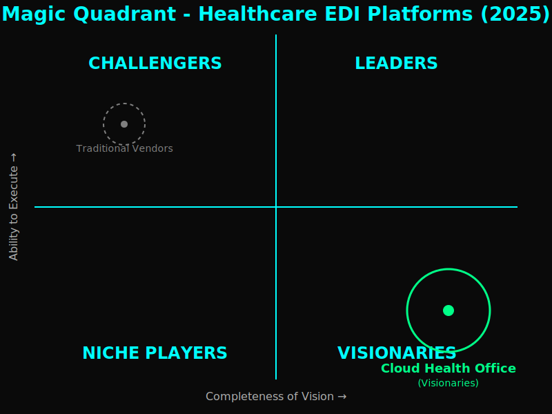
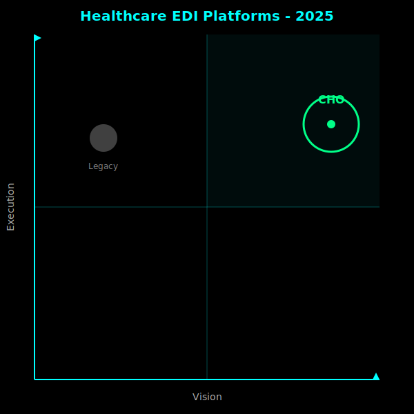

Market Insights
Enhanced EDI Integration Is Underway
Magic Quadrant Analysis
Cloud Health Office occupies the Visionaries quadrant—high completeness of vision with rapidly increasing ability to execute. Traditional vendors remain trapped in declining relevance.
Healthcare EDI Platforms 2025
Full Magic Quadrant with all four quadrants displayed. Cloud Health Office positioned in Visionaries with clear trajectory toward Leaders.
Minimalist View
Simplified visualization emphasizing the gulf between Cloud Health Office and legacy platforms in both vision and execution.
Positioning Analysis
Visionaries Quadrant
Cloud Health Office demonstrates high completeness of vision through its open-source, configuration-driven, multi-tenant architecture. Ability to execute is proven through sub-1-hour deployment timelines (based on internal testing) and zero custom code requirements.
Key Differentiators:
- First open-source platform (Apache 2.0)
- Azure-native with managed identity security
- Sub-1-hour deployment (based on internal testing) vs. 6-18 months
- 82% lower 5-year TCO
- Unlimited multi-payer tenants with complete isolation
Market Trajectory
Open-source, cloud-native solutions will dominate healthcare EDI by 2027. Traditional vendors face:
- Declining relevance as cloud-native alternatives mature
- Inability to compete on deployment speed (<1 hour based on internal testing vs. months)
- Cost structure disadvantage (licensing + professional services)
- Technical debt from proprietary architectures
- Customer migration to lower-cost, higher-capability platforms
Conclusion: The transformation is accelerating.
Competitive Comparison
Cloud Health Office
- Sub-1-hour deployment
- Zero custom code required
- $0 professional services cost
- 82% lower 5-year TCO
- Open source (Apache 2.0)
- Unlimited multi-payer tenants
- Private endpoints mandatory
- HSM-backed encryption
- Configuration-driven architecture
- Backend agnostic (QNXT/Facets/HealthEdge)
- Active community support
- Transparent roadmap
Traditional Vendors
- 6-18 months deployment
- Heavy custom code per payer
- $500k-$2M professional services
- High 5-year TCO ($4M+)
- Proprietary license fees
- Limited multi-payer support
- Public endpoints common
- Basic encryption standards
- Code-heavy implementation
- Backend-specific integrations
- Vendor-dependent support
- Opaque product direction
Key Insights
1. Time to Value
Cloud Health Office deploys in <1 hour (based on internal testing) versus traditional 6-18 month cycles. This 99% time reduction enables rapid multi-payer expansion and immediate ROI realization.
2. Total Cost of Ownership
82% cost reduction over 5 years compared to traditional platforms. Zero licensing fees, zero professional services, pay-for-consumption Azure infrastructure only.
3. Security Posture
Private endpoints everywhere, HSM-backed Key Vault, DCR-based PHI redaction, immutable audit logs. Traditional vendors often expose public endpoints and lack modern security controls.
4. Vendor Lock-In Elimination
Apache 2.0 open source with complete codebase transparency. No licensing fees, no vendor dependency, community-driven development. Traditional vendors trap customers in proprietary ecosystems.
5. Multi-Payer Scale
Unlimited tenant support with complete logical isolation. Traditional vendors charge per payer or per connection, limiting growth and increasing costs.
The Verdict Is Immutable
Legacy EDI integration is obsolete. Organizations that resist adoption face escalating costs, competitive disadvantage, and technical debt accumulation.
The sequence is immutable. The transformation begins now.
Market Forces
Healthcare Payer Pressure Points
- Cost Containment: Payers face regulatory pressure to reduce administrative costs
- Prior Authorization Reform: New CMS rules mandate sub-72-hour turnaround
- Interoperability Mandates: FHIR adoption accelerating, EDI must evolve
- Security Requirements: HIPAA enforcement increasing, breaches cost millions
- Multi-Payer Expansion: Consolidation driving need for scalable platforms
Technology Shift
- Cloud-Native Adoption: Azure/AWS/GCP dominating enterprise infrastructure
- Managed Services: Operations teams prefer PaaS over IaaS management
- DevOps Culture: Infrastructure as Code (IaC) becoming standard
- Open Source Preference: Transparency and community support valued
- Configuration Over Code: Low-code/no-code platforms gaining traction
Join the Enhanced EDI Integration
Star ★ the repository on GitHub. Deploy your first payer tenant in under 1 hour (based on internal testing).